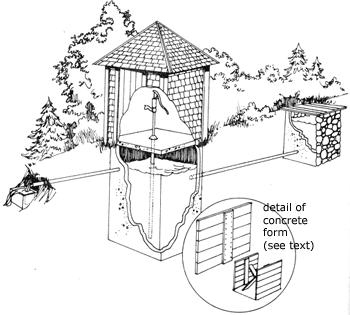
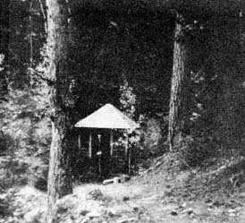

Our new Colorado cabin was nearly perfect except for the fact that it didn't have a water supply . . . and we didn't have $1,500 with which to drill a well. So, with a little imagination and a lot of work, we devised asupply of potable water that surpasses any municipal setup.
The cabin sits on an abandoned gold claim only 150 feet from a spring that bubbles to the surface in a natural draw. The water from the fountain is pure, clear and sweet . . . but it surfaced only in a tiny spot about the size of a dishpan. This was a good thirstquencher-you could kneel, bend over and drink as much as you liked-as long as your back held out. With time and patience, a container could even be filled to carry back to the cabin . . . but time and patience it did require.
We needed a means of collecting and storing the water for use as needed without interfering with the natural flow of the spring . . . and one step at a time, we found the solution.
First, we dug a hole four feet deep at the spot the volunteer fountain surfaced. Three sides of the excavation were lined with rocks to keep dirt and debris from falling in while allowing clean, sparkling water to continue seeping into the basin.
The fourth, or downhill, side of the hole we surfaced with cement. We also cemented the hole's floor (designed with a built-in depression in which sediment could settle) and, three inches above the floor, we imbedded an outlet pipe in the excavation's cement wall.
Not bad. We had a catch basin into which pure, cold mountain water flowed, collected and overflowed in a controlled manner. Still, ours was a very elementary arrangement . . . and the overflow pipe left the basin four feet below ground level! It was time to construct the second part of our water system.
Eight feet from the basin, we dug an eight-foot deep and three-foot square well with shovels, picks, buckets and ropes. Ropes? Yes, ropes . . . for raising the dirt-filled buckets from the deepening pit.
We had discovered, firsthand, on many previous occasions that the Rocky Mountains are not so named for their light, loamy soil. This particular project consumed all the spare weekend hours of husband, wife, two teen-age sons and pre-teen daughter for a month. Rocks too big to fit into the bucket were roped separately and dragged to the surface. Fortunately, we didn't hit any soft spots or experience sizable collapses during the digging and-at last!-the well was dug. As it turned out, the excavating was the easy part! Surfacing the floor and walls proved to be real work.
Finishing out the well took batch after batch of concrete mixed from old mine tailings, cement and water from the catch basin. The floor was no problem but the walls required the construction and rather complicated juggling of a set of forms.
The forms-merely a few boards held together b another board nailed across their backs-were the exact width of the walls and three feet high. We brace one upright with 2 x 4's a few inches from a wall and a second form upright a few inches from the opposite wall. Then, bucket by bucket, concrete was lowered and poured between the walls of earth and the woode forms. Each day, as the previous day's pour partially cured, we moved the forms up or to the other two walls and made a fresh pour. When we reached the proper point, we extended the pipe from the catc basin six inches inside the uphill wall of the well an carefully worked concrete around it.
After a week of mixing, pouring, bracing forms, removing forms and climbing in and out dozens of times . . . our well was finally completed.
The thought then occurred to us that the new holding tank also needed an overflow channel so we installed another section of pipe one foot from the top of the excavation's cemented downhill wall. Ten feet away, at the end of the pipe, we built a final tiny catch basin, thus assuring that the wildlife in the area would have a place to drink when we covered "our" basin to keep it clean.
At last, a concrete slab with a hole in the middle (for one more piece of pipe, topped by a bright red hand pump) was placed on top of the well. Immediately before positioning the slab, we removed the plastic bag that we had kept tied over the well's inlet pipe . . . and water began trickling into the vault from the first catch basin. We had no way of knowing how long it would take the spring to fill the well and were most pleasantly surprised to discover the big tank overflowing the very next day.
As one final precaution, we chlorinated the catch basin and-after a week-took samples of water to the local Health Department for analysis. The results came back marked "safe" and we were in business.
In business, that is, except for a well house . . . for the first winter following our "well spent" summer taught us some cold facts of life by freezing our water supply. The next summer we erected a simple but sturdy structure over our hand pump and its pit. Now, thin ice (which is easily cleared) forms on the end of the last overflow pipe only during extreme temperature drops and we have spring water to drink all year 'round.
A battered tin cup hangs on a nail in the well house where a few short strokes of the pump-in any season-produces the coldest, sweetest water this side of ice. That same pump fills a bucket in less than a minute and our homebuilt water system now supplies us with all we can drink . . . absolutely free of monthly service charges!
|
 HERE, STEP-BY-STEP (JUST THE WAY WE DID IT!) IS SOME ""KIND OF INSTRUCTIONS"" FOR TRANSFORMING THE TINIEST FLOWING SPRING INTO A DEPENDABLE YEAR-ROUND SOURCE OF DRINKING WATER |
 |
|